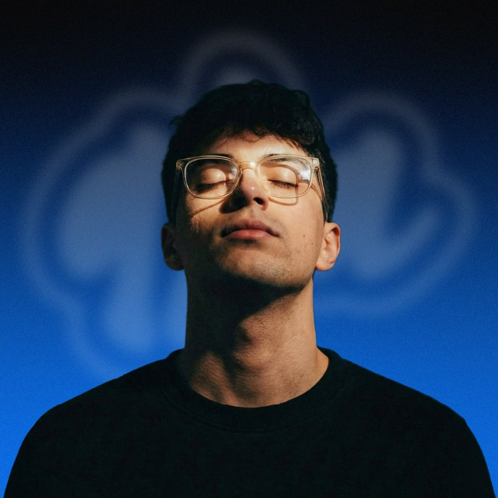

Un poco de qfadesign
Un espacio para pensar, hacer y compartir diseño.
qfadesign nació como mi identidad profesional, pero también es un lugar para compartir todo lo que me interesa del diseño: los procesos, las decisiones, las referencias y esas ideas que aparecen cuando aprendemos a mirar con más atención.

Acá vas a encontrar proyectos, recursos y algunas cosas para jugar. Ojalá algo te inspire o te ayude a mirar lo cotidiano de otra manera.
Últimos trabajos
En qué puedo ayudarte
¿Tenés una idea y no sabés por dónde empezar?
Hablemos de tu proyecto